R3 этапа
базовое восстановление
Восстановление и реконструкция
Для сухих, ломких и повреждённых волос. Глубокое восстановление, питание, мягкость и гладкость.
VALERI HAIR STUDIO · MINSK
Индивидуальный подход к вашим волосам, профессиональный уход и внимание к каждой детали.
Прайс и процедуры
Все восстановительные комплексы подбираются индивидуально после диагностики волос. Для густых волос и длины от 60 см может действовать доплата — подробности указаны в карточке процедуры.
базовое восстановление
Для сухих, ломких и повреждённых волос. Глубокое восстановление, питание, мягкость и гладкость.
новая технология
Для ослабленных, ломких и кудрявых волос. Помогает сохранить длину, плотность и эластичность.
усиленная формула
Самое мощное восстановление для блонда, пушистых, пористых и сильно повреждённых волос.
комплекс нового поколения
Восстановление с разглаживающим и ламинирующим эффектом — для гладкости без кератина.
выпрямление / дисциплина
Гладкость, рассыпчатость, блеск и мягкость. Подходит от лёгкой волны до тугого завитка.
максимальный комплекс
Две полноценные процедуры в один день: многоступенчатое восстановление + кератин/ботокс.
очищение и свежесть
Глубокое очищение кожи головы при жирности, перхоти, зуде и частом использовании стайлинга.
Результаты
Подборка результатов и эстетики студии. Работы можно фильтровать по направлениям и открывать крупнее — раздел постепенно пополняется реальными результатами мастеров.
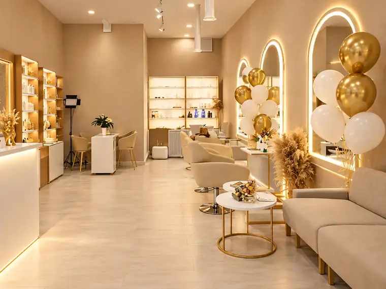
О студии
VALERI HAIR STUDIO — пространство, в котором красота волос сочетается с индивидуальным подходом и атмосферой комфорта. Здесь важны не только результат процедуры, но и то, как вы чувствуете себя в каждой детали визита.
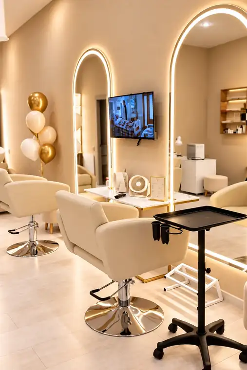
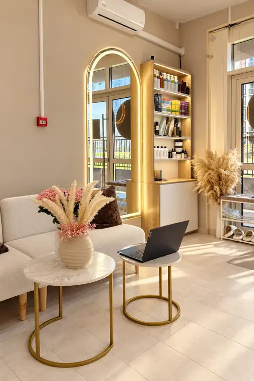
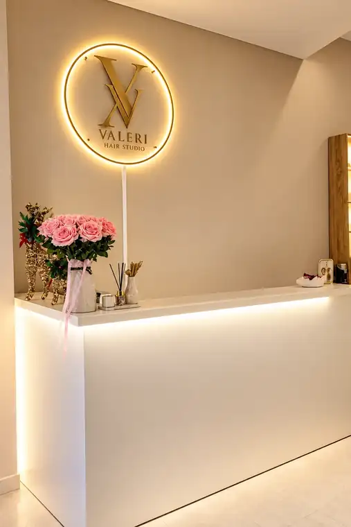
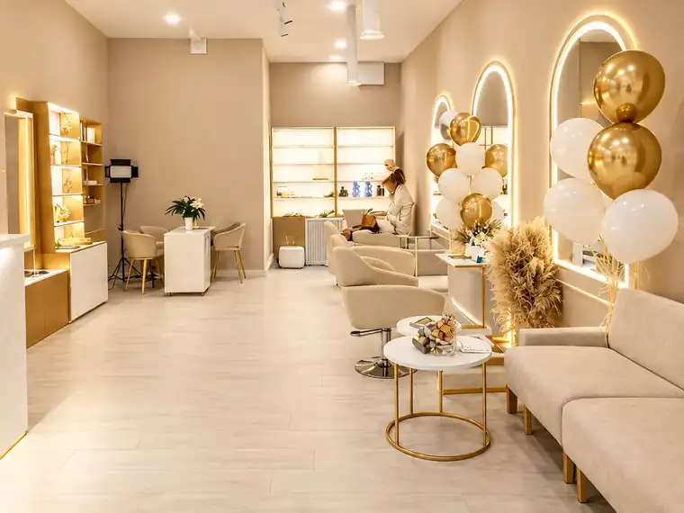
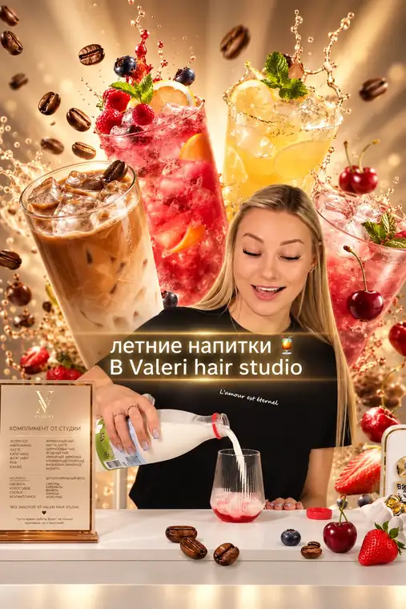
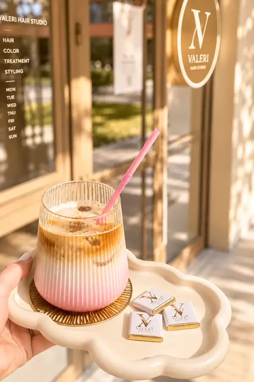
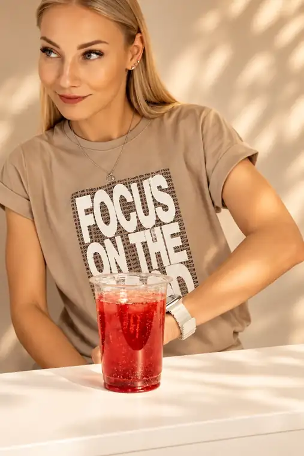
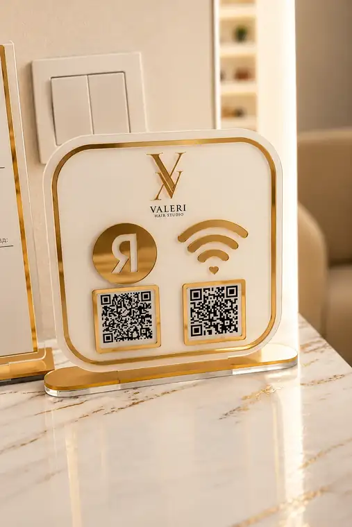
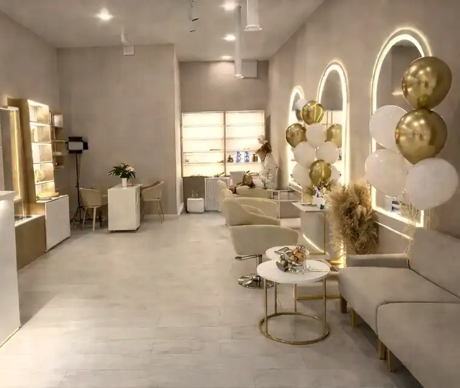
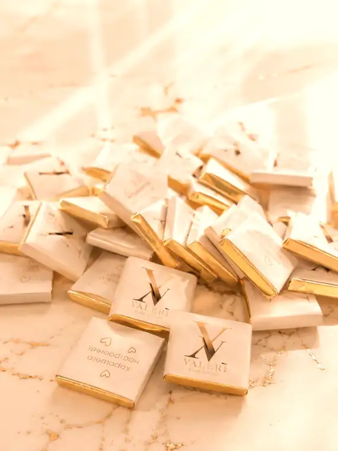
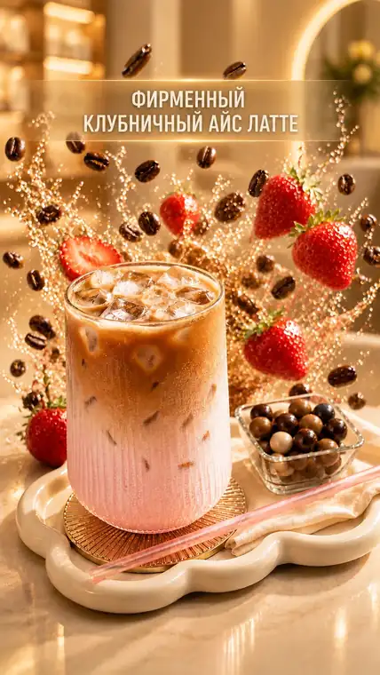
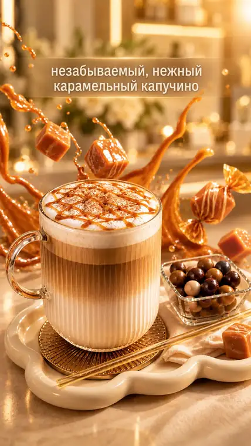
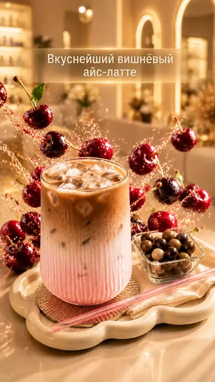
Обучение у основателя студии
Индивидуальное двухдневное обучение для мастеров, которые хотят глубже понимать логику восстановления волос, уверенно подбирать рабочий протокол и получать прогнозируемый красивый результат на разных исходных данных.
Для начинающих и практикующих мастеров, которые хотят освоить или систематизировать направление восстановления волос и научиться видеть волос глубже.
Диагностика, химия волоса и составов, логика подбора процедур, понимание повреждений и самостоятельное построение технологии под клиента.
2 полноценных дня, индивидуально, с максимумом практики, сложными моделями и детальным разбором каждого этапа.
Восстановление волос — это не одна процедура и не работа по готовой схеме.
Это системный подход к возвращению волосам качества: плотности, эластичности, управляемости, блеска и визуальной целостности полотна.
На обучении мы не учимся «наносить банку по инструкции». Мы учимся понимать волос, видеть его повреждения, разбираться в химии составов и самостоятельно строить технологию работы под конкретного клиента.
Вы будете понимать, что происходит с волосом до, во время и после процедуры, почему один и тот же состав на двух клиентах даёт разный результат и как сделать восстановление прогнозируемым, безопасным и носибельным.
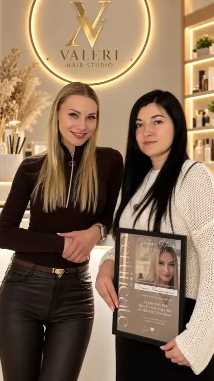
Материалы и атмосфера обучения
Сертификат, портрет преподавателя и живой результат индивидуального обучения — в том же мягком тёплом стиле сайта.
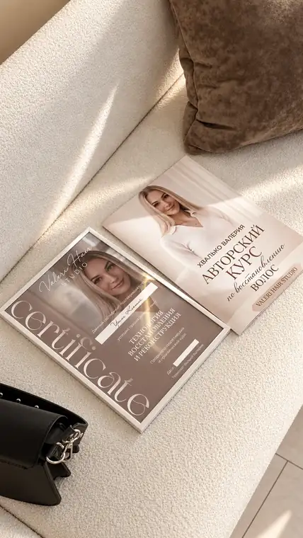
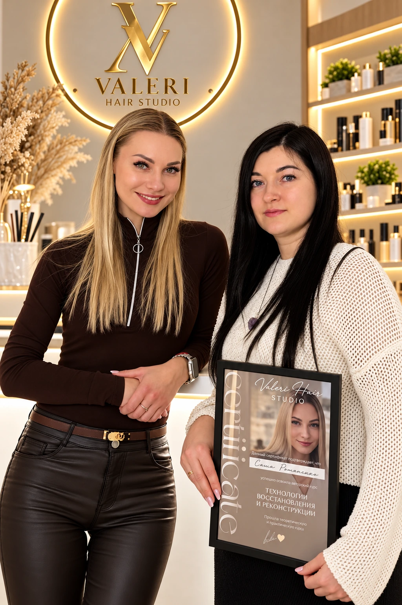
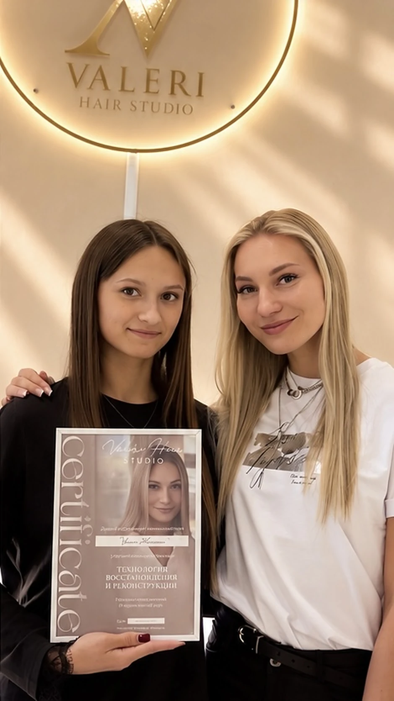
В отзыве об обучении ученица отдельно отмечает понятное подробное объяснение, демонстрацию работы и тёплый приём.
Читать отзывы →Основатель студии
Основатель VALERI HAIR STUDIO, топ-мастер по восстановлению и реконструкции волос и автор профессионального обучения для мастеров.
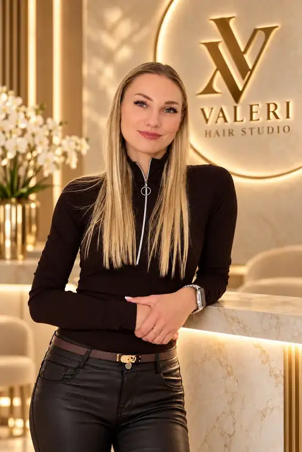
Founder · Top Master · Educator
Основатель VALERI HAIR STUDIO, эксперт по восстановлению и реконструкции волос, а также автор профессионального обучения для мастеров.Процедура подбирается не по шаблону, а под текущее состояние волос и желаемый результат.
Основной фокус — восстановление, плотность, мягкость, блеск и сохранение качества длины.
Валерия проводит авторское обучение по восстановлению волос стоимостью 1500 BYN.
Мнение клиентов
Ходит к Валерии около двух лет и особенно ценит индивидуальный подход, компетентность и то, что лишние процедуры не навязываются.
После неудачного опыта с другими процедурами отмечает, что волосы остаются крепкими, блестящими и ухоженными, а домашний уход подобран точно под неё.
В отзыве об обучении благодарит Валерию за подробное и понятное объяснение, демонстрацию работы и внимательное отношение.
Перед записью
Коротко о выборе процедуры, стоимости и записи. Если останутся вопросы, их можно уточнить у Валерии перед визитом.
Не обязательно выбирать процедуру самостоятельно. Валерия оценивает состояние и качество волос, уточняет желаемый результат и рекомендует подходящий протокол.
Восстановление в первую очередь направлено на качество и состояние полотна волос. Кератин / ботокс выбирают, когда важны также разглаживание, гладкость и более простой ежедневный уход. Точный вариант зависит от исходного состояния волос.
Некоторые процедуры могут сочетаться, но решение принимается индивидуально после оценки состояния волос. На сайте также есть комплекс «Тотальная реконструкция».
Цена зависит от выбранной процедуры, длины и густоты волос. В прайсе указаны базовые цены и возможные доплаты; точную стоимость можно уточнить перед процедурой.
Если для выбранной процедуры потребуется специальная подготовка, студия сообщит об этом при записи. Если сомневаетесь, задайте вопрос Валерии заранее.
Все актуальные окна доступны через DIKIDI. Нажмите «Записаться», выберите услугу и удобное свободное время — подтверждённая запись сразу попадёт в систему студии.
Онлайн-запись · DIKIDI
Онлайн-запись VALERI HAIR STUDIO подключена к DIKIDI. Выберите услугу, посмотрите актуальные свободные даты и время и подтвердите визит — запись сразу появится в системе студии.
В DIKIDI отображаются только актуальные свободные окна согласно рабочему графику студии.
Запись ведётся через официальный сервис DIKIDI.
Контакты
АдресМинск, ул. Жореса Алфёрова, 9, этаж 1, помещение 314
Телефон+375 (33) 394-50-22
Instagram@valeri_hair_studio